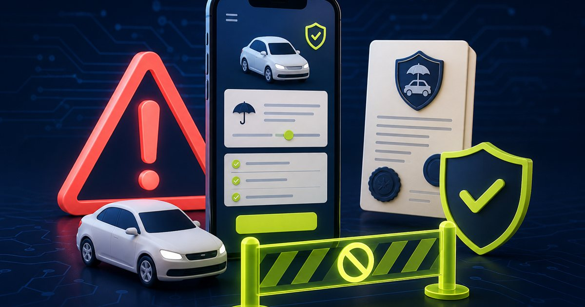

In breve
Prima di pagare, verifica sito e intermediario.
Il 7 agosto 2026 IVASS ha ordinato l’oscuramento di rca.assicurarsinovara.it, perché offriva abusivamente servizi assicurativi. L’Autorità raccomanda particolare cautela quando una polizza viene proposta tramite WhatsApp o SMS e quando il pagamento è richiesto su una carta prepagata.
Fonte primaria controllata. Il nome del sito e le raccomandazioni riportate provengono dal comunicato pubblicato da IVASS il 7 agosto 2026.
Cosa ha segnalato IVASS
IVASS, l’Istituto che vigila sulle assicurazioni in Italia, ha individuato un sito che proponeva servizi assicurativi senza essere autorizzato. Ne ha quindi ordinato l’oscuramento ai fornitori di connettività italiani.
Il provvedimento riguarda il dominio rca.assicurarsinovara.it. Anche se il sito viene bloccato, lo stesso sistema può ricomparire con un indirizzo diverso: per questo non basta cercare online il nome del venditore o affidarsi all’aspetto professionale della pagina.
I segnali da non ignorare
- La trattativa avviene solo su WhatsApp o tramite SMS. Questi canali non rendono automaticamente falsa un’offerta, ma permettono al truffatore di mettere fretta e spostare la vittima lontano dai controlli ufficiali.
- Il prezzo è molto più basso degli altri preventivi. Uno sconto eccezionale, soprattutto su una polizza temporanea, deve essere verificato prima di inviare documenti o denaro.
- Il pagamento viene richiesto su una carta prepagata. IVASS indica espressamente questo metodo come un segnale di cui diffidare.
- Il sito assomiglia a quello di un intermediario vero. Nome, logo, indirizzo e numero d’iscrizione possono essere copiati. Serve controllare che anche dominio, telefono ed email coincidano con quelli presenti negli elenchi ufficiali.
Come verificare una polizza prima di pagare
Controlla il sito negli elenchi IVASS
Apri direttamente la pagina ufficiale con i siti delle imprese e degli intermediari. Cerca l’indirizzo completo del sito, non soltanto il nome commerciale.
Verifica l’intermediario nel RUI
Controlla che la persona o la società compaia nel Registro Unico degli Intermediari. Confronta recapiti, sede e sito web: un numero d’iscrizione copiato da un soggetto vero non rende legittima la pagina che stai visitando.
Richiama usando un numero ufficiale
Non usare il recapito ricevuto nel messaggio. Cerca il numero negli elenchi IVASS o sul sito ufficiale della compagnia e chiedi conferma dell’offerta.
Non avere fretta di pagare
Se ti dicono che lo sconto scade tra pochi minuti, interrompi la trattativa. Un controllo in più costa meno di una polizza falsa, che lascia anche il veicolo senza copertura.
Hai già inviato denaro o documenti?
- Pagamento effettuato: contatta immediatamente la banca o l’emittente della carta tramite i canali ufficiali. Chiedi se l’operazione può essere bloccata o contestata.
- Documenti inviati: conserva la conversazione e presta attenzione a successivi tentativi di furto d’identità o a richieste costruite con i tuoi dati.
- Devi guidare: non considerare valida la copertura ricevuta. Usa il servizio di verifica della copertura assicurativa indicato dal Ministero e contatta una compagnia o un intermediario autorizzato.
- Conserva le prove: salva indirizzo del sito, preventivo, ricevuta, coordinate di pagamento, numeri di telefono e messaggi prima che scompaiano.
Come chiedere una verifica
Per dubbi su un’impresa o un intermediario puoi contattare il Contact Center Consumatori IVASS al numero verde 800 486661, dal lunedì al venerdì dalle 8:30 alle 14:30. Se ritieni di essere stato truffato, segnala rapidamente l’accaduto anche alla banca e alle Forze di polizia.
Trasparenza
Fonti verificate
Aggiornamenti e correzioni
Nessuna correzione al momento. Per segnalare un errore o un aggiornamento scrivi a redazione@hackerino.it.
Aiuta la redazione
Hai ricevuto un preventivo assicurativo sospetto?
Puoi inviarci il sito o il messaggio evitando documenti, password e dati completi della carta.